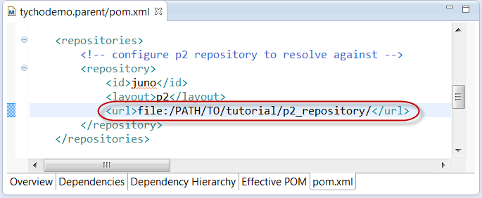

The build should succeed and build 2 modules:

File > New > Project > Plug-in Development > Fragment Project
 |
 |
 |
Note: As opposed to classic maven projects, tests are always in a separate module because otherwise we would pollute productive code with test-scoped dependencies in MANIFEST.
We use a fragment because:
- otherwise we would have to export packages of classes under test in MANIFEST
- we want to be able to test package-private members
Open AboutHandler.java, select the about text String and extract it into method getGreeting() with default visibility (package-private) using Refactor > Extract Method


- File > New > Other > JUnit Test Case
- choose tychodemo.bundle.handlers.AboutHandler as class under test

- choose getGreeting() as test method for which a stub will be created

- confirm "Add org.junit to required bundles" if prompted

- expected result: the test should fail with "java.lang.AssertionError: Not yet implemented"
- Note: make sure that both tychodemo.bundle as well as tychodemo.bundle.tests are active in the "Plugins" tab of the launch configuration (Use "Launch with: Plug-ins selected below only")

- Same as in exercise 1, right-click the project tychodemo.bundle.tests and choose Configure > Convert to Maven Project.
- Enter groupId: tychodemo, Version:1.0.0-SNAPSHOT and Packaging: eclipse-test-plugin

Note the packaging type eclipse-test-plugin which indicates this bundle or fragment contains tests which should be executed during build.
Again, you will get an error Unknown packaging: eclipse-test-plugin because the tycho build extension is not configured yet. Ignore this error for now.

Select tychodemo.bundle.tests and Update POM parent in selected projects:

Expected result is a new module

and the error Unknown packaging: eclipse-test-plugin must be gone now.
Expected result: build should fail because of the same test failure we just saw in eclipse:

- assert that getGreeting() contains "Tycho Demo"

- test should now succeed when executed in eclipse:

- Run As > Maven build on tychodemo.parent should now also succeed